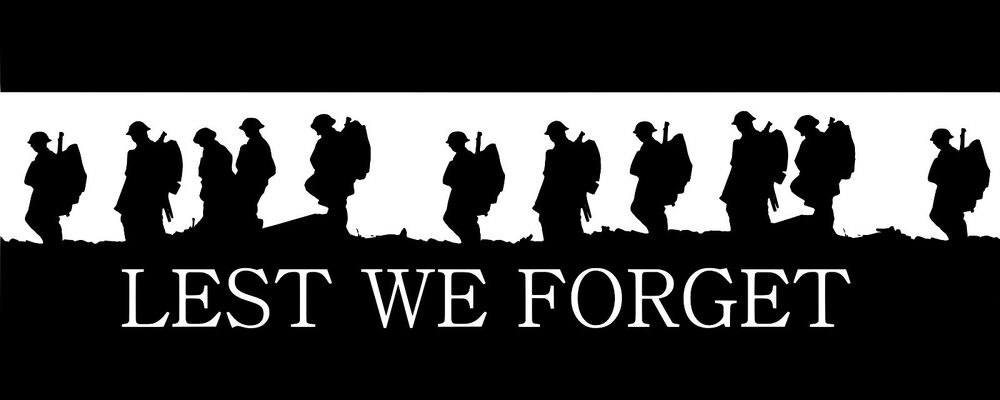

The Battle of Arnhem was a major battle of the Second World War at the vanguard of the Allied Operation Market Garden. It was fought in and around the Dutch towns of Arnhem, Oosterbeek, Wolfheze, Driel, and the surrounding countryside from 17–26 September 1944.
The Allies were poised to enter the Netherlands after sweeping through France and Belgium in the summer of 1944, after the Battle of Normandy. Market Garden was proposed by Field Marshal Sir Bernard Montgomery, who favoured a single thrust north over the branches of the Lower Rhine River, allowing the British Second Army to bypass the Siegfried Line and attack the Ruhr.
Eventually,the Allied forces advanced capturng all the bridges to allow the tanks to come through and annihalate the axis forces which are guarding Arnhem bridge. The reason why they wanted to take arnhem bridge is that if they took the bridge they control the river and they could stop the enemies supply line and they would become weak and they would win the war. The only thing stopping them were the 9th SS Panzer division and the second german paratrooper division. The Axis neede to stop the allied Tanks from coming so they blew up bridges to delay them from coming to Arnhem. Arhem was the biggest ever airbourn assault in the history of the world many died and some battalions were shattered. We will remeber them who fought on dutch terrotories - we will remeber the 17000 people that died in the operation - lest we forget.
By Magnus and a little help from my brother